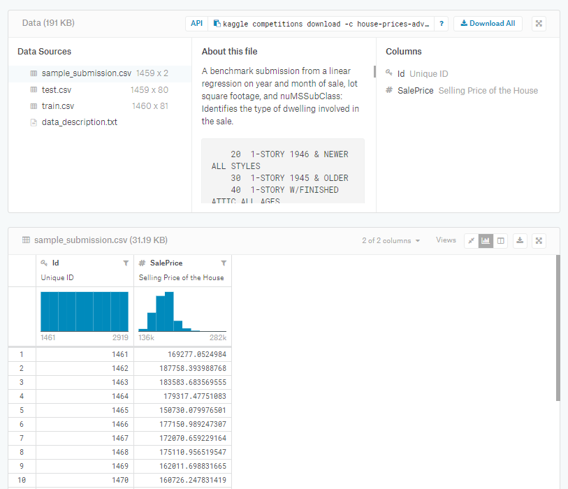
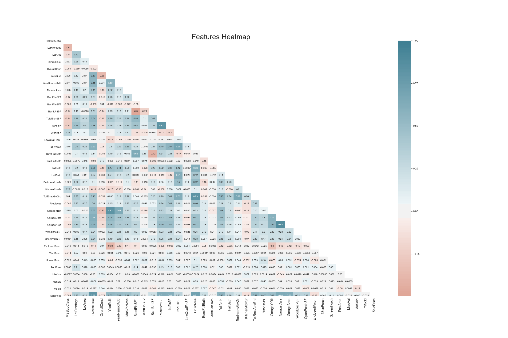
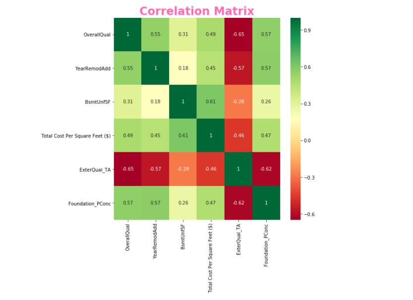
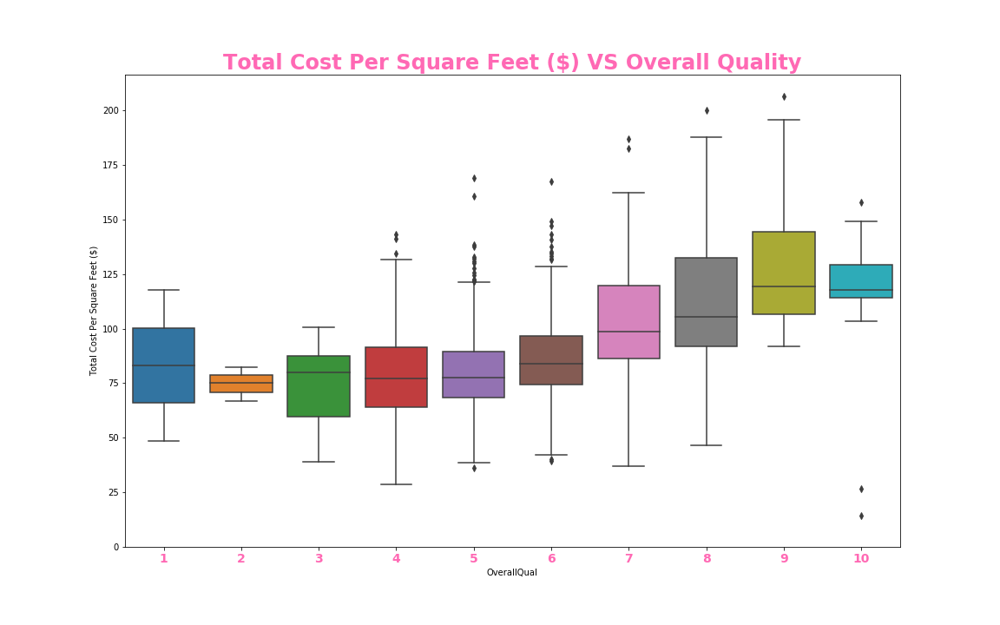
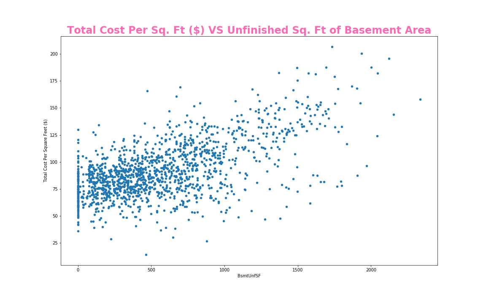
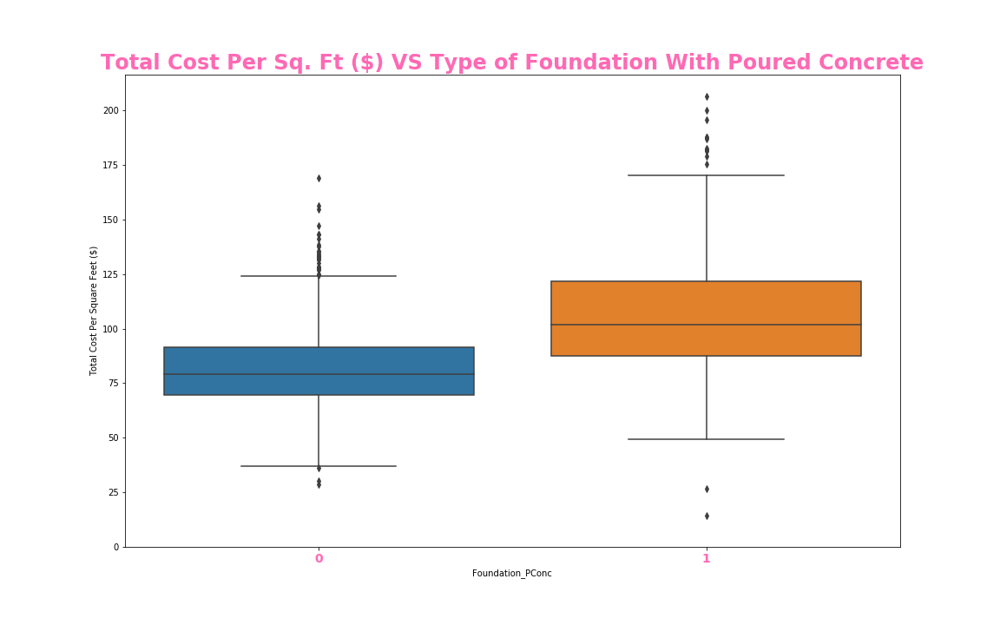
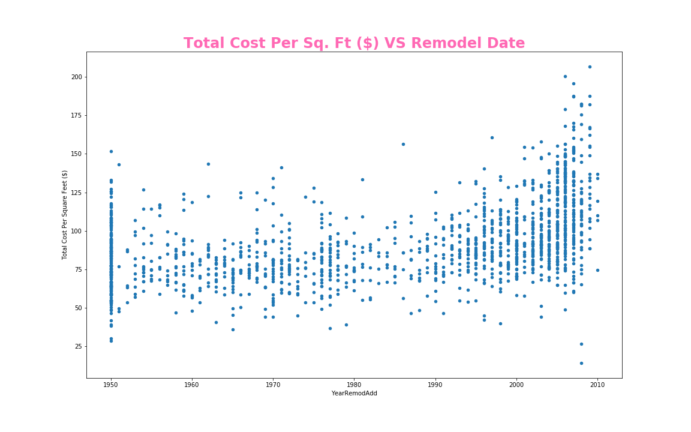
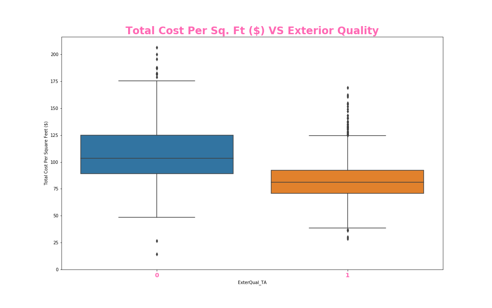
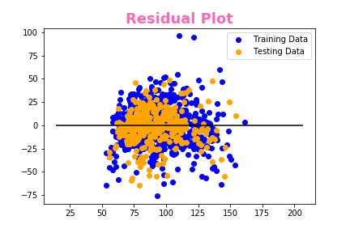
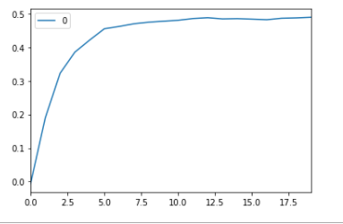

Housing Prices: Advanced Regression Techniques
By: Benjamin Podell, Blake Freeman, Edel Farah, Sarah Delia, Tomeka Morrison, Valentina Delia
Ask a home buyer to describe their dream house, and they probably won't begin with the height of the
basement ceiling or the proximity to an east-west railroad. But this playground competition's dataset
proves that much more influences price negotiations than the number of bedrooms or a white-picket fence.
With 79 explanatory variables describing (almost) every aspect of residential homes in Ames, Iowa, this
competition challenges you to predict the final price of each home.

File descriptions
train.csv - the training set
test.csv - the test set
data_description.txt - full description of each column, originally prepared by
Dean De Cock but lightly edited to match the column names used here
sample_submission.csv - a benchmark submission from a linear regression on year
and month of sale, lot square footage, and number of bedrooms

### Read Data and Load Packages
# Importing dependencies
%matplotlib inline
import pandas as pd
import numpy as np
import matplotlib.pyplot as plt
import seaborn as sns
from sklearn import ensemble, tree, linear_model
from sklearn.model_selection import train_test_split, cross_val_score
from sklearn.metrics import r2_score
from sklearn.utils import shuffle
from sklearn.ensemble import AdaBoostRegressor
# Read the data
train_df = pd.read_csv('Resources/train.csv')
test_df = pd.read_csv('Resources/test.csv')
# Create Total Living Area SF and Price Per SF for lot and Living Area
basement1 = train_df['BsmtFinSF1']
basement2 = train_df['BsmtFinSF2']
living_space = train_df['GrLivArea']
sale_price = train_df['SalePrice']
total_square_feet = living_space + basement1 + basement2
cost_per_square_feet = sale_price / total_square_feet
# Train Set Up
train_df['Total Square Feet (ft)'] = total_square_feet
train_df['Total Cost Per Square Feet ($)'] = cost_per_square_feet.round(2)
# Test Set Up
Test_basement1 = test_df['BsmtFinSF1']
Test_basement2 = test_df['BsmtFinSF2']
Test_living_space = test_df['GrLivArea']
Test_total_square_feet = Test_living_space + Test_basement1 + Test_basement2
test_df['Total Square Feet (ft)'] = total_square_feet
# Generating a Features Heatmap Prior to One Hot Encoding
sns.set_style('whitegrid')
plt.subplots(figsize = (30,20))
## Plotting heatmap.
# Generate a mask for the upper triangle (taken from seaborn example gallery)
mask = np.zeros_like(train_df.corr(), dtype=np.bool)
mask[np.triu_indices_from(mask)] = True
sns.heatmap(train_df.corr(), cmap=sns.diverging_palette(20, 220, n=200), mask = mask, annot=True, center = 0, );
plt.xticks(size = 14)
## Give title.
plt.title("Features Heatmap", fontsize = 30);

#Train Encoding, created multiple additional columns
train_df_hot = pd.DataFrame(train_df, columns=['Alley', 'BldgType', 'BsmtCond', 'BsmtExposure', 'BsmtFinType1',
'BsmtFinType2', 'BsmtQual', 'CentralAir', 'Condition1', 'Condition2', 'Electrical', 'ExterCond', 'ExterQual',
'Exterior1st', 'Exterior2nd', 'Fence', 'FireplaceQu', 'Foundation', 'Functional', 'GarageCond', 'GarageFinish',
'GarageQual', 'GarageType', 'Heating', 'HeatingQC', 'HouseStyle', 'KitchenQual', 'LandContour', 'LandSlope',
'LotConfig', 'LotShape', 'MSZoning', 'MasVnrType', 'MiscFeature', 'Neighborhood', 'PavedDrive', 'PoolQC',
'RoofMatl', 'RoofStyle', 'SaleCondition', 'SaleType', 'Street', 'Utilities']
)
train_df_hot = pd.get_dummies(train_df_hot,drop_first=True)
#Test DF Hot Encoding
test_df_hot = pd.DataFrame(test_df, columns=['Alley', 'BldgType', 'BsmtCond', 'BsmtExposure', 'BsmtFinType1',
'BsmtFinType2', 'BsmtQual', 'CentralAir', 'Condition1', 'Condition2', 'Electrical', 'ExterCond', 'ExterQual',
'Exterior1st', 'Exterior2nd', 'Fence', 'FireplaceQu', 'Foundation', 'Functional', 'GarageCond', 'GarageFinish',
'GarageQual', 'GarageType', 'Heating', 'HeatingQC', 'HouseStyle', 'KitchenQual', 'LandContour', 'LandSlope',
'LotConfig', 'LotShape', 'MSZoning', 'MasVnrType', 'MiscFeature', 'Neighborhood', 'PavedDrive', 'PoolQC',
'RoofMatl', 'RoofStyle', 'SaleCondition', 'SaleType', 'Street', 'Utilities']
)
test_df_hot = pd.get_dummies(test_df_hot,drop_first=True)
# Combine the Dataframes and Drop the String Values
train_df = pd.concat([train_df, train_df_hot], axis=1)
train_df = train_df.drop(columns=['Id','Alley', 'BldgType', 'BsmtCond', 'BsmtExposure', 'BsmtFinType1',
'BsmtFinType2', 'BsmtQual', 'CentralAir', 'Condition1', 'Condition2', 'Electrical', 'ExterCond', 'ExterQual',
'Exterior1st', 'Exterior2nd', 'Fence', 'FireplaceQu', 'Foundation', 'Functional', 'GarageCond', 'GarageFinish',
'GarageQual', 'GarageType', 'Heating', 'HeatingQC', 'HouseStyle', 'KitchenQual', 'LandContour', 'LandSlope',
'LotConfig', 'LotShape', 'MSZoning', 'MasVnrType', 'MiscFeature', 'Neighborhood', 'PavedDrive', 'PoolQC',
'RoofMatl', 'RoofStyle', 'SaleCondition', 'SaleType', 'Street', 'Utilities'] )
test_df = pd.concat([test_df, test_df_hot], axis=1)
test_df = test_df.drop(columns=['Id','Alley', 'BldgType', 'BsmtCond', 'BsmtExposure', 'BsmtFinType1',
'BsmtFinType2', 'BsmtQual', 'CentralAir', 'Condition1', 'Condition2', 'Electrical', 'ExterCond', 'ExterQual',
'Exterior1st', 'Exterior2nd', 'Fence', 'FireplaceQu', 'Foundation', 'Functional', 'GarageCond', 'GarageFinish',
'GarageQual', 'GarageType', 'Heating', 'HeatingQC', 'HouseStyle', 'KitchenQual', 'LandContour', 'LandSlope',
'LotConfig', 'LotShape', 'MSZoning', 'MasVnrType', 'MiscFeature', 'Neighborhood', 'PavedDrive', 'PoolQC', 'RoofMatl',
'RoofStyle', 'SaleCondition', 'SaleType', 'Street', 'Utilities'] )
#Set Everything to Numeric
train_df = train_df.apply(pd.to_numeric)
test_df = test_df.apply(pd.to_numeric)
train_df = train_df.fillna(0)
test_df = test_df.fillna(0)
train_df = train_df.drop(columns=['SalePrice'])
# Exploration
corrmat = train_df.corr()
top_corr_features = corrmat.index[abs(corrmat['Total Cost Per Square Feet ($)'])>0.45]
plt.figure(figsize=(8,8))
g = sns.heatmap(train_df[top_corr_features].corr(),annot=True,cmap="RdYlGn")
g.set_title('Correlation Matrix', size = 24, fontweight = 'bold', color = 'hotpink')
bottom, top = g.get_ylim()
g.set_ylim(bottom + 0.5, top - 0.5)
plt.savefig('./templates/Images/Heatmap.png')

#box plot overallqual/saleprice
var = 'OverallQual'
data = pd.concat([train_df['Total Cost Per Square Feet ($)'], train_df[var]], axis=1)
f, ax = plt.subplots(figsize=(16, 10))
fig = sns.boxplot(x=var, y='Total Cost Per Square Feet ($)', data=data)
plt.xticks(size = 14, fontweight = 'bold', color = 'hotpink')
ax.set_title('Total Cost Per Square Feet ($) VS Overall Quality', size = 24, fontweight = 'bold', color = 'hotpink')
fig.axis(ymin=0,);
ax.figure.savefig('./templates/OverallQuality.png')

var = 'BsmtUnfSF'
data = pd.concat([train_df['Total Cost Per Square Feet ($)'], train_df[var]], axis=1)
data.plot.scatter(x=var, y='Total Cost Per Square Feet ($)',figsize=(16, 10));
plt.title('Total Cost Per Square Feet ($) VS Unfinished SF of Basement Area', size = 24,
fontweight = 'bold', color = 'hotpink')
plt.savefig('./templates/Images/BsmtUnfSF.png')

#box plot overallqual/saleprice
var = 'Foundation_PConc'
data = pd.concat([train_df['Total Cost Per Square Feet ($)'], train_df[var]], axis=1)
f, ax = plt.subplots(figsize=(16, 10))
fig = sns.boxplot(x=var, y='Total Cost Per Square Feet ($)', data=data)
plt.xticks(size = 14, fontweight = 'bold', color = 'hotpink')
ax.set_title('Total Cost Per Sq. Ft ($) VS Type of Foundation With Poured Concrete', size = 24, fontweight = 'bold', color = 'hotpink')
fig.axis(ymin=0,);
ax.figure.savefig('./templates/Images/Foundation_PConc.png')

var = 'YearRemodAdd'
data = pd.concat([train_df['Total Cost Per Square Feet ($)'], train_df[var]], axis=1)
data.plot.scatter(x=var, y='Total Cost Per Square Feet ($)',figsize=(16, 10));
plt.title('Total Cost Per Sq. Ft ($) VS Remodel Date', size = 24, fontweight = 'bold', color = 'hotpink')
plt.savefig('./templates/Images/YearRemodAdd.png')

#box plot overallqual/saleprice
var = 'ExterQual_TA'
data = pd.concat([train_df['Total Cost Per Square Feet ($)'], train_df[var]], axis=1)
f, ax = plt.subplots(figsize=(16, 10))
fig = sns.boxplot(x=var, y='Total Cost Per Square Feet ($)', data=data)
plt.xticks(size = 14, fontweight = 'bold', color = 'hotpink')
ax.set_title('Total Cost Per Sq. Ft ($) VS Exterior Quality', size = 24, fontweight = 'bold', color = 'hotpink')
fig.axis(ymin=0,);
ax.figure.savefig('./templates/Images/ExterQual_TA.png')

# Obtain target and predictors
strong_cor = ["OverallQual", "YearRemodAdd","BsmtUnfSF","ExterQual_TA","Foundation_PConc"]
X = train_df[strong_cor]
y = train_df["Total Cost Per Square Feet ($)"].values.reshape(-1, 1)
print(X.shape, y.shape)
Output: (1460, 5) (1460, 1)
from sklearn.model_selection import train_test_split
X_train, X_test, y_train, y_test = train_test_split(X, y, random_state=42)
from sklearn.linear_model import LinearRegression
# Create a linear model
model = LinearRegression()
# Fit (Train) our model to the data
model.fit(X, y)
Output: LinearRegression(copy_X=True, fit_intercept=True, n_jobs=None, normalize=False)
#calculate R2 Score and Mean Squared Error (MSE)
from sklearn.metrics import r2_score
# Use our model to predict a value
predicted = model.predict(X)
# Score the prediction with mse and r2
r2 = r2_score(y, predicted)
print(f"R-squared: {r2}")
R-squared: 0.531143673282861
Modeling The Data
# Create the model using LinearRegression
from sklearn.linear_model import LinearRegression
model = LinearRegression()
# Fit the model to the training data and calculate the scores for the training and testing data
model.fit(X_train, y_train)
training_score = model.score(X_train, y_train)
testing_score = model.score(X_test, y_test)
print(f"Training Score: {training_score}")
print(f"Testing Score: {testing_score}")
Output: Training Score: 0.5427163893247156, Testing Score: 0.48929751770099894
# Plot the Residuals for the Training and Testing data
plt.scatter(model.predict(X_train), model.predict(X_train) - y_train, c="blue", label="Training Data")
plt.scatter(model.predict(X_test), model.predict(X_test) - y_test, c="orange", label="Testing Data")
plt.legend()
plt.hlines(y=0, xmin=y.min(), xmax=y.max())
plt.title("Residual Plot")

from sklearn.preprocessing import MinMaxScaler
scaler = MinMaxScaler(feature_range=(0, 1))
x_train_scaled = scaler.fit_transform(X_train)
x_train = pd.DataFrame(x_train_scaled)
x_test_scaled = scaler.fit_transform(X_test)
x_test = pd.DataFrame(x_test_scaled)
from sklearn import neighbors
from sklearn.metrics import mean_squared_error
from math import sqrt
import matplotlib.pyplot as plt
%matplotlib inline
r_score = [] #to store rmse values for different k
for K in range(20):
K = K+1
model = neighbors.KNeighborsRegressor(n_neighbors = K)
model.fit(x_train, y_train) #fit the model
pred=model.predict(x_test) #make prediction on test set
error = r2_score(y_test, pred) #calculate rmse
r_score.append(error) #store r_score values
print('r2 Score ' , K , 'is:', error)
r2 Score 1 is: -0.006175268194475558
r2 Score 2 is: 0.19013128958412795
r2 Score 3 is: 0.32231075018098765
r2 Score 4 is: 0.3851921121030757
r2 Score 5 is: 0.42108552230258456
r2 Score 6 is: 0.4549242549693332
r2 Score 7 is: 0.4617540588481075
r2 Score 8 is: 0.4696218381838856
r2 Score 9 is: 0.4743936874630249
r2 Score 10 is: 0.4773475366958242
r2 Score 11 is: 0.48010535045491465
r2 Score 12 is: 0.48523541291715866
r2 Score 13 is: 0.48762564644094286
r2 Score 14 is: 0.4841587948967565
r2 Score 15 is: 0.4849015514070848
r2 Score 16 is: 0.4834942200298865
r2 Score 17 is: 0.4817999168275017
r2 Score 18 is: 0.48605288191498774
r2 Score 19 is: 0.4871079989600001
r2 Score 20 is: 0.4890283304321088
curve = pd.DataFrame(r_score) #elbow curve
curve.plot()

from sklearn.preprocessing import MinMaxScaler
scaler = MinMaxScaler(feature_range=(0, 1))
x_train_scaled = scaler.fit_transform(X_train)
x_train = pd.DataFrame(x_train_scaled)
x_test_scaled = scaler.fit_transform(X_test)
x_test = pd.DataFrame(x_test_scaled)
from sklearn.tree import DecisionTreeRegressor
# create a regressor object
regressor = DecisionTreeRegressor(random_state = 42)
# fit the regressor with X and Y data
regressor.fit(X, y)
training_score = regressor.score(X_train, y_train)
testing_score = regressor.score(X_test, y_test)
print(f"Training Score: {training_score}")
print(f"Testing Score: {testing_score}")
Output: Training Score: 0.9897327659059136, Testing Score: 0.9928085181043863

Summary Report
In summmary, when it came to initially cleaning our data, we used pandas and numpy. Then we determined the cost per square
feet by dividing the sale price by total square feet to begin our Machine Learning Model. We used matplotlib and seaborn
for the exploration aspect of our data. We used Sklearn to make a linear regression model, and ensemble a decision tree.
We attempted to use K Nearest Neighbors but ultimately decided to use the decision tree for a more accurate prediction.
Deriving relevant variables, we made a heatmap only including things with over 45% relevance to total price per square foot.
We created a residual plot to compare the relationship from our training and testing data. And various plots compared to the
price per square foot; A scatter plot with Unfinished Square Feet of Basement Area; a scatter plot with year remodeled or
construction date if it hasn’t been remodeled; a boxplot comparing whether or not a house has poured concrete; a boxplot
categorizing whether the exterior quality is Typical or Average or not; and finally, an elbow curve pertaining to our KNN model.
In conclusion, after testing several supervised ML models we received the best results from the Decision Tree Regressor
(Random Forest). Though the size of the model can be cumbersome and can use a large amount of computing power this did
preform the best with a R score of .9897 for Training and .9928 for testing.
Final Project